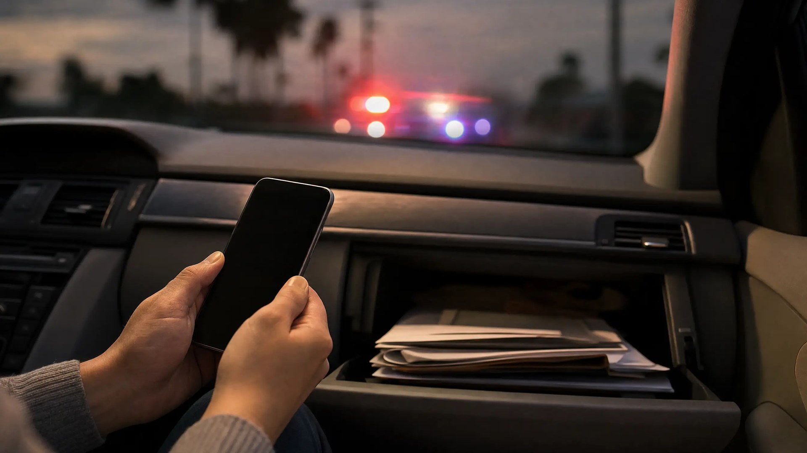

Is No Proof of Insurance a Crime in Florida?

A Florida no proof of insurance ticket under F.S. 316.646 is a noncriminal nonmoving infraction, not a crime. If your coverage was in effect on the date of the stop, showing that can often resolve the ticket.
Trouble starts when a lapse turns into a suspension. It also starts when someone shows an officer a card for coverage that has lapsed. Here is where the civil ticket ends and criminal exposure begins.
What Does F.S. 316.646 Require?
F.S. 316.646 requires you to carry proof of required insurance in the vehicle. A paper card works, and so does electronic proof on your phone. When an officer asks, you must show it.
That is a duty to carry proof. It is different from the duty to have coverage at all. Florida separately requires owners to keep personal injury protection (PIP) and property damage liability coverage in force. Each must be at least $10,000.
The difference matters. Forgetting your card is a paperwork problem. Letting coverage lapse is a coverage problem, and the state deals with that through your license, not just a ticket.
Why Were You Stopped?
Most no-proof tickets come from a stop made for something else, like speeding, a tag light, or a crash. Officers often see insurance and license status from a plate check before they walk up.
Under Kansas v. Glover, 589 U.S. 376 (2020), a plate check showing the owner's license is revoked can justify a stop. That holds if nothing suggests someone else is driving.
Delaware v. Prouse, 440 U.S. 648 (1979), bars random stops made only to check papers. If the stop itself was unlawful, a motion to suppress may be worth discussing.
Is a No-Proof Ticket a Crime?
No. F.S. 316.650 governs the Uniform Traffic Citation, the form officers use for traffic tickets. A no-proof violation goes on that form as a noncriminal nonmoving infraction. You are not arrested for it alone, and it is not a criminal charge.
Criminal traffic charges work differently. They come by arrest or by a Notice to Appear, which puts you in county court on a criminal case. If you are unsure which one you got, read our guide on telling a Notice to Appear from a civil traffic ticket.
What If You Had Insurance on the Day of the Stop?
This is how many of these tickets end. The law cares whether coverage existed on the violation date, not whether the card was in your hand. If an owner doesn't show that coverage by the court date, the court tells DHSMV to suspend after a conviction.
Many Florida clerks go a step further. The Martin County and St. Johns County clerks, for example, publish guidance on asking for dismissal with proof of coverage. A policy bought after the stop generally won't help. The question is coverage on the day you were cited.
What to Gather Before You Contact the Clerk
- An insurance card or policy showing coverage in effect on the citation date.
- Proof that the policy included PIP and property damage liability.
- Your citation, so the dates and vehicle can be matched.
- The current procedure from the Orange County Clerk of Courts, or the clerk where you were cited.
Can a Lapse in Insurance Suspend Your Florida License?
Yes, and no traffic stop is needed. Under F.S. 324.0221, insurers must report PIP and property damage cancellations, nonrenewals, and new policies to DHSMV within 10 days. If DHSMV can't confirm continuous coverage, it suspends your license and registration.
The department sends a letter first. If you moved, that letter may never reach you. Reinstatement requires proof of coverage and a fee, which rises for repeat lapses within three years, up to $500.
Two Different Problems
A no-proof ticket is about what you could show the officer. An insurance suspension is about what DHSMV's records say about your coverage. You can clear one and still have the other on file.
When Does an Insurance Problem Become a Crime?
Two situations move this out of civil court. The first is showing proof you know is no good. Knowingly showing an officer proof of a policy that is not in force is a first-degree misdemeanor under F.S. 316.646.
The second is driving on a suspended license. Florida's driving-while-suspended law separates two versions. Driving while suspended without knowing it is a noncriminal infraction. Knowingly driving while suspended is a crime, a second-degree misdemeanor on a first offense, with steeper penalties after that.
The Knowledge Rule Works Differently for Insurance Suspensions
In most suspended-license cases, a DHSMV suspension order creates a rebuttable presumption that the driver knew. That presumption does not apply to suspensions for insurance, or financial responsibility, violations. In a case built on an insurance suspension, the State must prove you actually knew.
Either situation can turn a routine stop into a Notice to Appear or an arrest. For how the license charges compare, see DWLSR vs. no valid license in Florida.
What Should You Do Before Your Court Date?
F.S. 318.14 gives you 30 days from the citation to act on a noncriminal infraction. You can pay the civil penalty, elect traffic school where eligible, or request a hearing. Missing the deadline can lead to a license suspension.
Before you pay, find out whether proof of coverage could end the case instead. A few practical steps:
- Read the citation: Note your deadline and any court date printed on it.
- Gather proof: Find records showing coverage was in effect on the date of the stop.
- Check your DHSMV record: Confirm whether an insurance suspension is already on file.
- Answer any FLHSMV letter: Respond to insurance notices by the date the letter gives.
If a hearing is set, our guide on what to expect at your first traffic court hearing walks through the process.
How a Criminal Defense Attorney Can Help
If you're facing a no-insurance ticket or license suspension in Orlando, a defense attorney can review your citation, proof of coverage, and DHSMV record. That review shows whether the ticket can be dismissed and whether any suspension or criminal exposure applies.
As a former State Trooper and Deputy Sheriff, I understand how law enforcement builds these cases—and how to challenge them effectively. For more on outcomes, see why hiring an attorney beats handling a traffic ticket yourself.
This article is general information about Florida law, not legal advice for your situation. Reading it does not create an attorney-client relationship.
Facing No-Insurance Ticket or License Suspension Charges?
If you received a no-insurance citation or a suspension notice in Orange County or Central Florida, contact Lotter Law for a consultation. We will review your citation and driving record before your deadline passes.
Contact Lotter Law at 407-500-7000 for a free consultation.

Jeff Lotter
Criminal Defense Attorney | Former State Trooper
Jeff Lotter is an Orlando criminal defense attorney and former Florida Highway Patrol trooper. He uses his law enforcement background to build stronger defenses for clients facing criminal charges.
Related Articles
Why Hiring an Attorney Beats Handling a Traffic Ticket Yourself – The Data Speaks
Data analysis shows why hiring an attorney leads to better outcomes for Florida traffic tickets. Explore our interactive dashboard to see th…
What to Expect at Your First Traffic Court Hearing in Florida
Nervous about your first traffic court appearance? Here's exactly what happens from check-in to verdict in Orange, Osceola, and Seminole Cou…